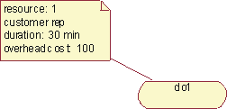
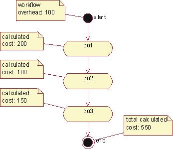
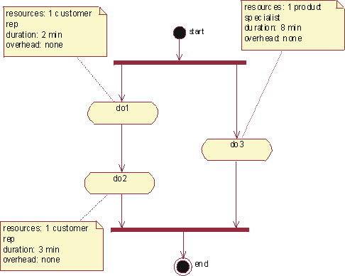
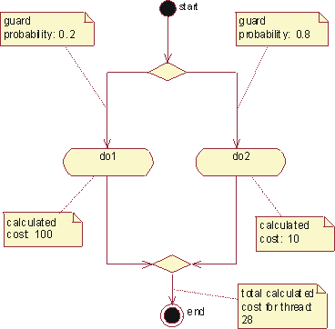
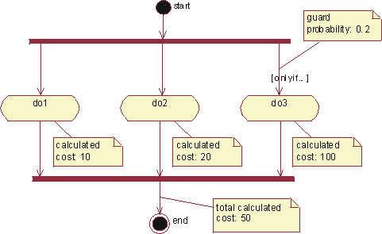

| Концепция: Activity-Based Costing |
 |
|
| Связанные элементы |
|---|
IntroductionActivity-based costing (ABC) is a methodology that measures the cost and performance of activities, resources, and cost objects. Resources are assigned to activities, then activities are assigned to cost objects based on their use. Activity-based costing recognizes the causal relationships of cost drivers to activities [PLR99]. Activity-based costing is about:
Activity-based management (ABM) is a broad discipline that focuses on achieving customer value and company profit by managing activities. ABM draws on activity-based costing as a major source of information. Calculating the Performance of a Business ProcessTo calculate the performance of a business process, you need to know what the workflow is and what type of resources are involved in performing the workflow. You need to have the following elements describing the workflow in place before you can start measuring:
Basic Cost DriversFor each activity state in an activity diagram, the basic cost drivers are:
Additionally, for a transition you may need to determine the Guard Probability, which is the probability for a transition to be traversed. This needs to be determined for alternative threads such as outgoing transitions from a decision, and for conditional threads such as a conditional transition outgoing from a synchronization bar. Calculating the Cost of Performing a WorkflowA workflow is described with a collection of activity states. For each of those activity states, you must define what the cost drivers are, in order to calculate the total cost for performing the activity. Example:  The total cost of performing this activity is 'number of resources' * 'resource cost' * ' duration' + 'overhead cost'. Knowing that the cost rate for using a customer representative is 200 per hour, the total cost for this activity is then 1*200*0.5 + 100=200. The total cost of performing the workflow is the sum of the cost for each activity, although there is often an overhead associated with initiating the workflow. For the whole workflow, it may be interesting to calculate the total duration or frequency. Example:  The workflow depicted in this activity graph has an overhead cost that needs to be added to the cost of performing each activity. Concurrent ThreadsIf concurrent threads exist in an activity diagram, the duration of the longest thread is the relevant duration for all threads. Concurrent threads are shown using synchronization bars. Example:  The total duration for these two concurrent threads is 8 minutes, which is the duration of the longest thread in this case. Alternative ThreadsIf alternative threads exist in an activity diagram, the cost for the alternative threads are calculated as the sum of the cost for each alternative, weighted with the occurrence probability for each alternative. Alternative threads are shown using decision icons. Example:  The total calculated cost for a thread with alternatives is the weighted cost of the alternative threads. Conditional ThreadsIf a conditional thread exists, the cost for that thread is added to the cost for its parallel threads, weighted with the probability of it occurring. A conditional thread is indicated with a guard condition on a transition. Example:  If there is a conditional thread, its cost is first weighted with the probability of it occurring, and then added to the cost of its parallel threads. Nested Activity GraphsIf an activity has a sub-graph, the cost of that activity is the cost of the activities in the sub-graph. Identifying Areas of ImprovementActivity-based costing is often used to compare alternatives, such as proposed change versus current practice, or to compare different proposed changes. There are three kinds of parameters to work with to explore differences between alternative flows:
To compare these alternatives, you may create "sibling" activity diagrams to show the variations of the business use case. When changing what resources are used in the realization of the workflow, you must also establish "sibling" realizations of the workflows to correctly explore resource costs.
|
© Copyright IBM Corp. 1987, 2006. Все права защищены.. |